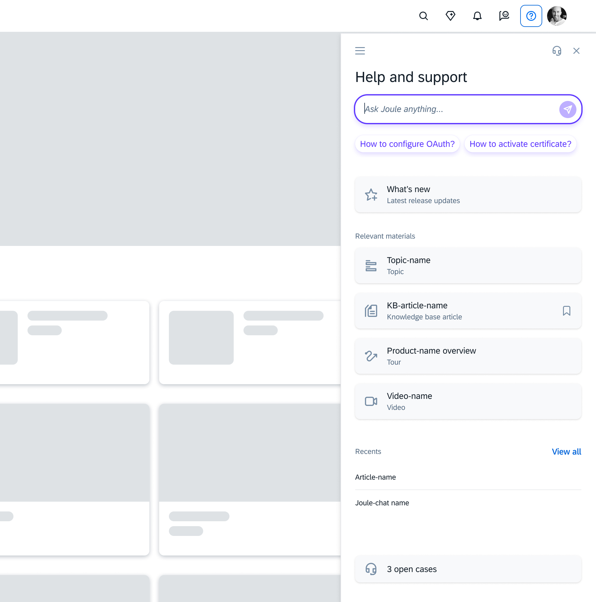

This case study is password protected. Enter the password to continue.
Generative ResearchMulti-PhaseProduct Direction
01 · SAP Help & Support · Jan–Mar 2026 · 3 phases
SAP Help & Support Navigation Research
SAP had 74 help and support resources across 5 platforms, yet self-service kept failing. I led a three-phase landscape study across 95 participants to understand why. The findings directly generated the requirements for the Next Gen Panel, SAP's redesigned in-product support experience.
My Role
Lead researcher across all 3 phases. Phase 3 fully independent; Phases 1–2 co-led with a research partner, synthesis and product framing led by me.
Generated requirements for the Next Gen Panel — a role-filtered, AI-first entry point replacing the manual curation CSMs were absorbing. Escalated to executive level without being pushed. Product on track for Q3 2026 launch. Interview guide and landscape audit template adopted as reusable frameworks.
95
Participants across 3 phases
74
Support resources in ecosystem
11/11
CSMs independently named same gap
Context & Research Opportunity
Stakeholders came to me with a surface-level question: "Why are we receiving so many support tickets?" My instinct was to reframe it. Tickets are the end of a failure chain. Treating them as the problem would only produce fixes at the wrong layer. Before anyone could address ticket volume, we needed to understand the full help and support landscape: what resources existed, whether users knew about them, and where the journey broke down. No one had mapped this before.
SAP's ecosystem had grown to 74 resources across 5 platforms. Yet self-service adoption kept failing. Users either bypassed it entirely and contacted their Customer Success Manager (CSM), or tried once, hit a dead end, and never returned. CSMs were absorbing the navigation burden the product was designed to carry. No one had documented why at scale.
The SAP ecosystem in scope
5
central platforms
74
help & support resources
6
resource types
Research Program
Three phases · Jan–Mar 2026 · 95 total participants
Phase 1
Jan 2026
Ecosystem survey
n = 66
Quantified the discoverability gap · reframed the problem
Phase 2
Feb 2026
User interviews · end users, admins, content creators
Catalogued 74 resources across 5 platforms. First time the landscape had been fully documented.
Users aware of only 3 resources on average. High awareness did not produce adoption. This reframed the problem from ticket volume to discoverability.
Phase 2: User interviews (n=18)
Mapped two divergent support paths: direct-to-human (8/18) vs. self-service first (10/18).
14 of 18 participants independently named AI as their near-ideal support model.
Phase 3: CSM interviews (n=11)
CSMs were manually filtering 25+ resources down to ~13 before customers started. This curation work belonged in the product.
All 11 CSMs independently named a role-filtered single entry point as the critical missing capability.
Key Findings
Themes developed through affinity mapping in Miro across all three phases, then tagged and reconciled in Dovetail. Five structural patterns emerged consistently regardless of participant type or phase.
Theme 1
No mental model of the ecosystem
Users could not describe what resources existed or how they related to each other. Most assumed SAP Central was the only entry point. The ecosystem was invisible to the people it was designed to serve.
Theme 2
Escalation was the path of least resistance
For 8 of 18 interview participants, contacting a CSM or filing a ticket was faster and more reliable than self-service. The system had trained users to bypass it. CSMs confirmed this pattern: most customers arrived having attempted nothing.
Theme 3
Content existed but context was missing
Resources that existed for one product line or role surfaced generically across all users. Participants repeatedly landed on content that was technically correct but did not apply to their specific setup, version, or situation. Relevance filtering was entirely manual.
Theme 4
Language was a structural barrier
Users searched in the language of their business problem. SAP documentation used internal product taxonomy. These vocabularies rarely matched. Users who did not already know the right SAP term could not find the right answer, regardless of whether it existed.
Theme 5
AI was the unprompted near-ideal model
14 of 18 interview participants independently described AI as the kind of support they wished existed: something that understood their question in plain language, knew their context, and returned one relevant answer rather than a list. This theme emerged without prompting across all three participant types and was the strongest convergence signal in the data set. It became the primary design requirement for the Next Gen Panel.
Path A: Direct to Human (8 of 18 participants)
Participants bypass self-service entirely. Triggered by high business urgency, prior failed self-service experiences, or familiarity with IT-supported workflows. Common in complex integration scenarios and critical system issues.
Problem Occurs
Problem arises. High urgency or high stakes.
›
Colleagues
When colleagues aren't available or can't help.
›
SAP Consultant / Ticket
Immediate escalation. Self-service is never attempted.
"When company installed for Concur, company had direct contact phone numbers to SAP... so when there is an issue, then just call that number."
Admin User P1
"I emailed Concur Support 3 times, first time last year and last time a week and a half ago. If nothing happens, I will call them."
End User P2
Path B: Self-Serve First → Gradual Escalation (10 of 18 participants)
Participants prefer to resolve issues independently before escalating. Triggered by lower-stakes problems, prior self-service success, and greater time flexibility.
Problem Occurs
Problem arises.
›
Google / YouTube / AI
Most common first resource. Preferred for visual, quick-answer formats.
›
Colleagues
When first step fails, the people next to them or reachable quickly.
›
SAP Resources
When colleagues can't help; deeper technical documentation.
›
SAP Consultant / Ticket
Last resort. Slow and expensive. Filed only when everything else fails.
Phase 1 survey — resource awareness by platform (n=66)
End Users
Admins
Content Creators
46
43
40
SAP Central
31
23
38
Help Portal
28
23
38
Community
27
20
35
Support Portal
9
9
8
Learning Hub
10
8
13
openSAP
11
8
14
Events
4
8
11
Training
16
7
16
SAP Press
From Research to Product Direction
The ecosystem users had to navigate before a single entry point existed
SAP Central Hub
openSAP
SAP Learning Hub
SAP Support Portal
SAP Events & Webinars
SAP Press
SAP Learning Journeys
SAP Training & Certification
SAP Help Portal
SAP Community
9 of 74 resources shown. End users were aware of an average of 3; admins averaged 7+. CSMs manually curated 25+ down to ~13 before customers even started searching.
Current state
User hits an issue → attempts self-service → fails → contacts CSM → CSM manually curates and filters resources → user gets an answer. CSM absorbs the navigation burden.
→
Design requirement (research-generated)
A role-filtered, AI-first single entry point that surfaces relevant resources by product, role, and situation. It can diagnose SAP application problems directly and replaces the manual curation chain so CSMs can focus on strategic work.
The three-phase program produced a product direction rather than evaluating one. All three data sets converged on the same requirement: 11/11 CSMs named it unprompted, 14/18 end users described AI as their near-ideal model, and the ecosystem survey quantified exactly where the filtration gap sat.
Research output
Introducing the Next Gen Panel
That convergence became the product brief for SAP's redesigned in-product help and support experience, planned for public release Q3 2026. The panel introduces a single, role-filtered entry point surfaced directly inside the product. Instead of navigating across 5 platforms and 74 resources, users ask Joule a question in natural language, get contextually relevant results, and have a pre-filled support case created without leaving the screen. The curation work that CSMs were absorbing manually is now handled by the product itself.

The Next Gen Panel, single entry point: SAP's AI-first in-product support panel consolidates 74 resources into one place. Joule search, contextually relevant materials, and recents replace the 5-platform navigation users were failing to traverse. Requirements generated directly from this research program.The Next Gen Panel, AI-first resolution flow: Joule diagnoses the root cause of an application error directly in context, surfaces troubleshooting steps, and creates a pre-filled support case, all without the user leaving the product. This is the end state the research defined: replace the CSM navigation burden with in-product intelligence.
Cross-Functional Influence
The reframe that created buy-in
Stakeholders brought me a tactical question about ticket volume. I reframed it as a structural design problem that started well before a ticket was ever filed. This repositioning changed who needed to be in the room. What began as a product team conversation escalated organically to executive stakeholders once the Phase 1 data showed the scale of the discoverability gap: we were solving for users who did not even know better options existed.
Phase 1 survey data was the turning point. Showing users averaged only 3 known resources out of 74 made the gap concrete and undeniable for stakeholders who had assumed awareness was not the issue.
Anchored readouts in CSM voice. "I'm the Siri of SAP" communicated the structural problem more persuasively than any researcher summary.
Visualized the curation chain (25+ resources, CSM curates to 13, user sees 1 to 3) to make the product opportunity legible to non-researchers.
Cross-phase triangulation across three independent data sets (survey, user interviews, and CSM interviews) made the findings resistant to dismissal.
Research escalated to executive level without being pushed. An executive stakeholder described it as "long needed" and one of the most comprehensive help and support ecosystem studies they had seen at SAP.
Impact
Generated requirements for the Next Gen Panel — SAP's redesigned in-product support experience, on track for Q3 2026 launchResearch escalated to executive level without being pushed; described as one of the most comprehensive support ecosystem studies seen at SAPPrototype task success rate exceeded 80% in early testing · post-launch success metric defined: 20% reduction in user time-to-resolution within one quarter
"This is long needed. One of the most comprehensive help and support ecosystem studies we have seen."
Executive stakeholder, post-readout
Reflection
The reframe was the hardest call and the right one
When stakeholders arrived with a ticket volume question, the safe response would have been to study tickets. I pushed back and proposed a broader landscape study instead. That decision added scope and time, and it required stakeholders to trust a direction before they had any data. Looking back, the Phase 1 survey results validated the reframe quickly. But I went in without a guarantee. If the data had come back ambiguous, I would have had to defend a scope expansion that did not pay off. That is a real risk I would take again, but I would be more explicit upfront about the bet I was making and what the off-ramp looked like if the data did not converge.
Run the CSM phase earlier to sharpen Phase 2 recruitment
Phase 3 CSM interviews corroborated and sharpened the Phase 2 user findings after the fact. Running them first, or in parallel, would have let me target more specific user profiles in Phase 2 and made the cross-phase triangulation tighter from the start.